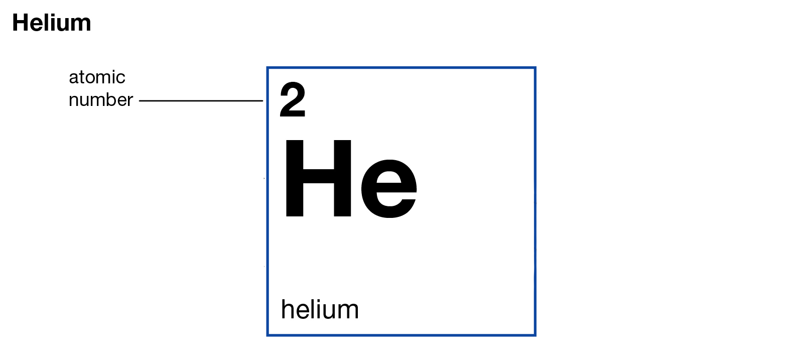
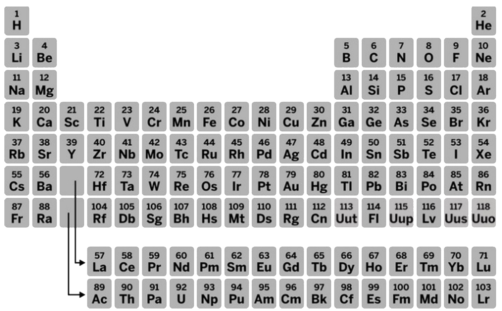
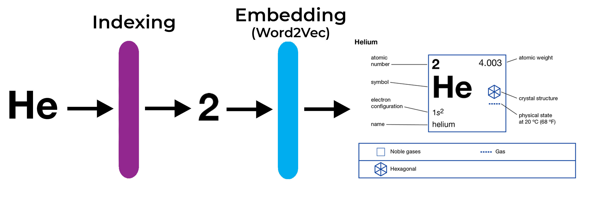
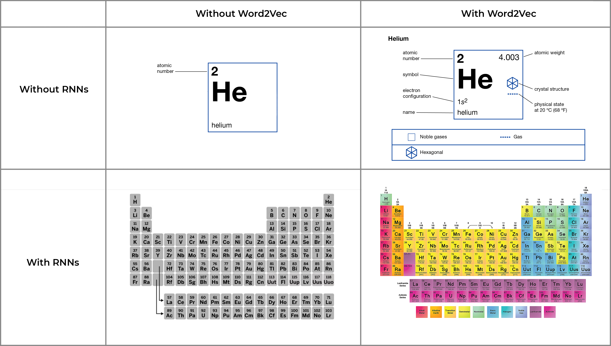
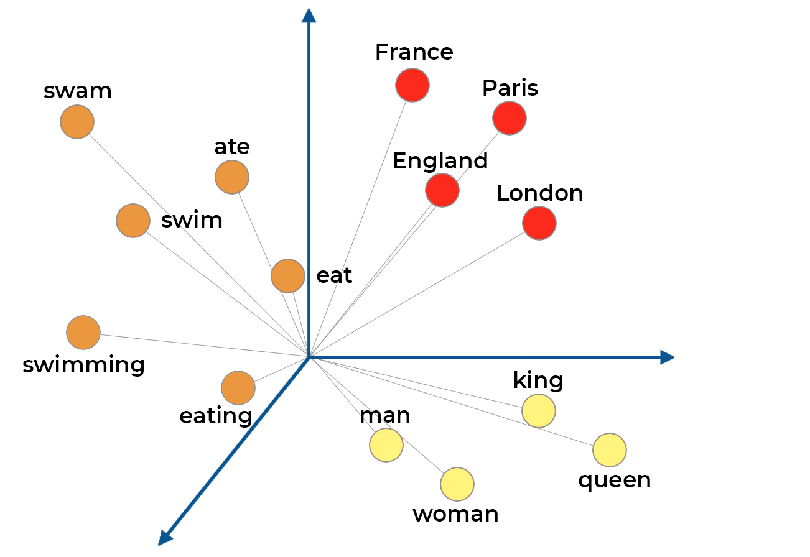
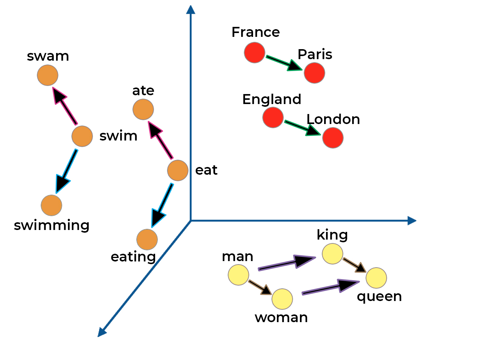
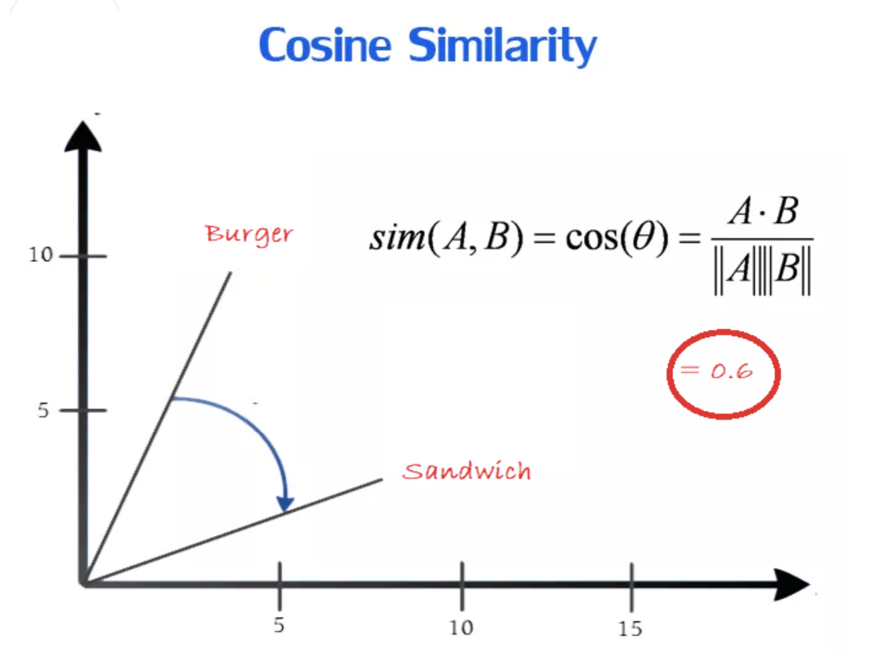
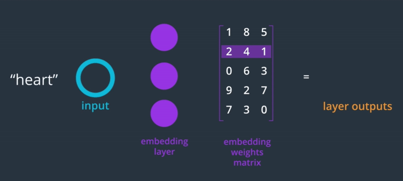
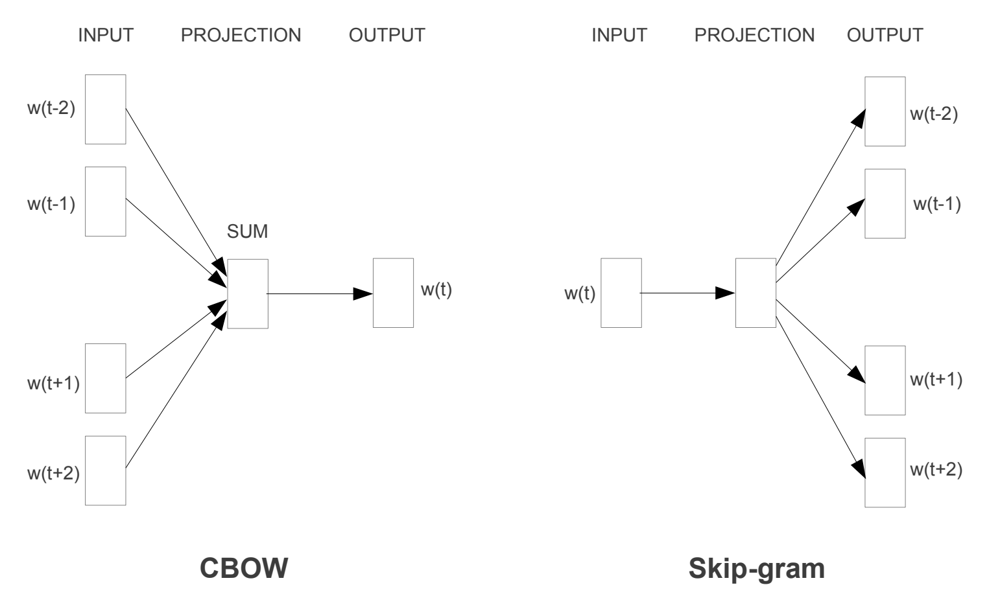

It’s a pretty well-known fact that humans suck at being random. Whether or not we realize it, everything we do tends to have some pattern to it.
The languages we use to communicate are no exception to this rule. All languages follow some set pattern of rules called syntax.
But why does this matter?
A large chunk of the deep learning industry is focused on something called Natural Language Processing (NLP). NLP is a subfield of artificial intelligence focused on training computers to process human language.
Natural language processing started off in the 1950s when a researcher from Harvard created a machine called a “watermelon box”.
It did one simple thing…. it could detect when a person said the word watermelon.
The person who created it thought that the future of NLP was creating thousands of boxes that each detected a single word ...
This sounds pretty laughable now, but it was a pretty important invention back then.
We’ve come a long way since then and the watermelon box is now long forgotten. In fact, it was hard to find any information about them online without thousands of these square watermelons popping up:
Now, NLP is used everywhere. Whether you’re using Google Translate, Siri, or even Grammarly — There’s an AI using NLP in the background to understand whatever language you’re communicating in.
So the big question is: How did neural networks get so good at understanding human language?
Let’s start with how a classic fully connected neural network would approach this problem.
If you want to learn how neural networks work, check out this article.
First of all, a neural network can only accept numbers as inputs. So you can’t just give it a bunch of text to process. You have to convert it into a numerical value.
The initial way this was solved was through indexing. Basically each word would be represented by its own unique number. This number is then one-hot encoded.
This is the equivalent of giving someone who knows nothing about chemistry a single cell of a basic periodic table.

Just as each element on the table has a unique atomic number, each word a neural network sees has a unique index.
The position of an element on the periodic table provides a lot of information. Obviously, with just a single cell of the table, you lose out on that valuable information.
Similarly, the problem with simple fully connected neural networks is that the AI has no context for the word.
It doesn’t know what words appeared before the one its looking at, so you can’t expect it to do anything valuable with that word.
· · ·
Recurrent Neural Networks
A lot of improvements in NLP started with recurrent neural networks (RNNs). These are great at processing a series of data (like sentences) because they use memory to use context.
You can learn how Recurrent Neural Networks work here.
Using our chemistry analogy, it's the same as giving you the entire periodic table. You now have a better chance at understanding trends based on the row and column an element is in.

Similarly, an RNN can use the word around the one it is analyzing to understand the context and make better predictions.
RNNs were a major advancement that enabled better text generation and analysis.
· · ·
Word2Vec
Since then there have been even more advances in NLP with various research papers on new training optimizers, network architectures, etc.
But out of all of them,one of the biggest wins for NLP was the use of embedding layers like Word2Vec.
With RNNs, an algorithm can identify the context of a word, but it doesn’t truly understand each word. It just sees a random index number.
The neural network is missing out on so much information about each word.
Each word in any language has several properties that we subconsciously analyze when understanding that language.A word could be plural, be a noun, have a certain verb tense, etc.
Word2Vec does exactly what it's named. It takes a word and converts it into a vector representation:
I’m going to stay loyal to my periodic table analogy and show the whole process of using embedding layers like Word2Vec to process word.

Indexing Helium gives its unique numerical representation: its atomic number.
Passing that number through a trained Word2Vec layer gives us the vector representation of Helium. This would be the atomic weight, electron configuration, physical state, etc.
Here’s a visualization I created to summarize the periodic table analogy of Word2Vec and RNNs impact on Natural Language Processing:

One of the coolest parts of the vectors produced by embedding layers like Word2Vec is that you can visualize and quantify the relationships between words.
The dimensionality of the embedding vectors depends on the embedding size (something you as a programmer decide on).
When any word is converted into a vector, its dimensions are equal to the embedding size.
You can then plot those vectors on a graph and visualize the relationships between various words.
Let's take an example with an embedding size of 3. It will produce 3D vectors that we can plot on a cartesian plane:
In practice, embedding layers are much larger than this, but you can't visualize more than 3 dimensions of space.

You can immediately see some trends in the location of these vectors. Words that are similar have close positions in vector space. I've color-coded the vector heads to clarify the clusters in the example:
Red → Places
Orange → Verbs
Yellow → People
What's even more interesting is that there's also meaning behind the exact vector transformation between words.

Each arrow colour is a certain vector transformation that represents the relationship between words.
Here's a summary of the vector transformations in this example and the relationships they show:
Green: Country → Capital
Pink: Infinitive → Past tense
Blue: Infinitive → Present tense
Purple: Male → Female
Brown: Person → Royalty
How Word2Vec Vectors are Calculated
Word2Vec embeds words by learning to predict words from training sentences.
The idea is that the neural network will learn to assign similar weights to words used in a similar way.
take the following sentence:
The ________ was jumping.
The blank word could easily be any noun like frog, man, dog etc.
Because of that, similar words will have similar weight values connecting them to each node in the embedding layer.
You can measure the similarity between words using cosine distances. Related words will have small cosine distances.

Since the words are one-hot encoded, the weight of the embedding layer turns into a lookup table where we can find the vector representation of that word.

It's like a dictionary, you provide the index of the word you want to embed and its looks in the corresponding row in the weight matrix.
· · ·
Types of Word2Vec
Even within Word2Vec, there are multiple types: Continuous Bag of Words (CBOW) and Skip-gram.

In CBOW, you take a certain window of words in a sentence and try to fill in the blank. CBOW takes context and generates a word.
Skip-gram does the opposite - it takes a single word and guesses the words that appear around it. Skip-gram takes a word and generates its context.
Intuitively, you'd think that CBOW is easier to implement than Skip-gram since the ratio between it gives you more information and you have less to guess.
The interesting thing is the Skip-gram is the preferred way of implementing Word2Vec. It just seems to work better.
· · ·
Beyond Word2Vec, there have been some more interesting advancements in embedding layers.
Another type of embedding called Doc2Vec creates vector representations of entire paragraphs and as the name suggests ... documents.